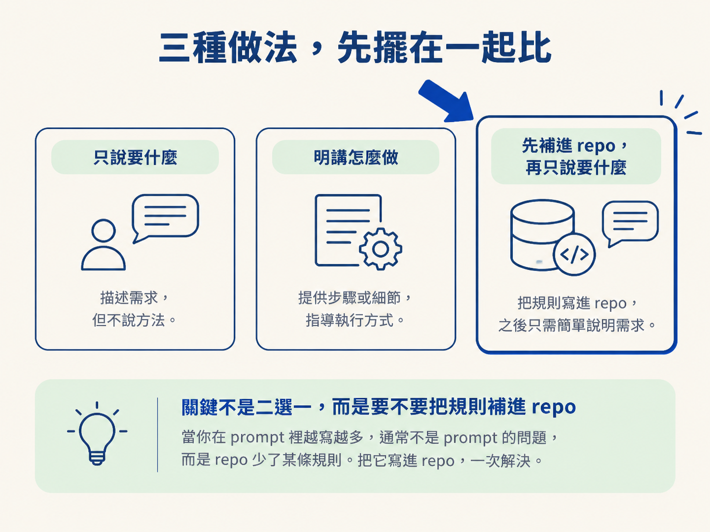
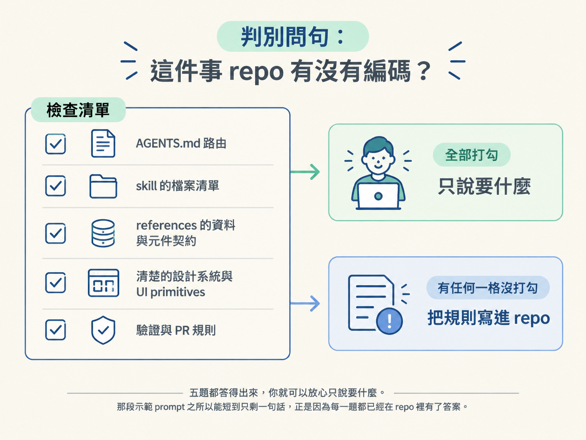

上一節講完一個讓人心動的結論：只要 repo 把規則編碼好，你只要說「要什麼」，Codex 自己會找到做法。聽起來乾脆俐落，但等到你真的要打 prompt 的那一刻，還是會停下來猶豫：這段話到底該講多細？
這個猶豫不是你想太多，而是因為兩邊都會出事。
往少的那邊偏，風險很具體：Codex 不知道你們的慣例，於是他自己發明一套，做出一個和其他卡片格格不入的東西。往多的那邊偏，你又變回那個把整份規格書塞進 prompt 的人。不只囉唆，更糟的是，你還可能漏掉某條只有原作者才知道的默契。
這一節要給你的，就是畫出這條線的判準。讓「講多細」這個決定不必靠感覺，而是可以照著一個問題問自己。看完你會判斷得出：這個 prompt 該停在只說要什麼，還是要明講設計系統、套件與慣例。
面對「要給多少指引」，其實有三個選項，不是只有二選一：
| 做法 | 你下 prompt 的方式 | 什麼時候成立 |
|---|---|---|
| 只說要什麼 | 描述結果與行為，把做法交給 repo | repo 已經把這件事編碼好了 |
| 明講怎麼做 | 指定設計系統、套件、慣例、驗證方式 | repo 沒編碼，而且你這次不打算補 |
| 先補進 repo，再只說要什麼 | 先寫 AGENTS.md 或 skill，才送功能 prompt | 這件事會重複發生，值得一次講清楚 |
這裡有個關鍵：多數時候，真正的選擇不是前兩個，而是要不要跳到第三個。
判斷的訊號很好認。如果你發現自己在 prompt 裡越寫越多，那通常不是 prompt 的問題，而是 repo 少了某條規則。與其每次都在 prompt 裡重講一遍同樣的話，不如把它寫進 repo，一次解決。

要決定自己落在哪一格，對自己問一串問題就好。只要有任一題答案是「沒有」，就代表「怎麼做」這件事還留在你腦子裡，而不在 repo 裡：
| 問句 | 去哪找答案 |
|---|---|
| AGENTS.md 有沒有把這類工作路由到某個 skill？ | 看 AGENTS.md 的 skill 路由區塊 |
| 那個 skill 有沒有告訴 Codex 先讀哪些既有檔案？ | 看 skill 的 SKILL.md |
| 資料流與元件契約有沒有被寫下來？ | 看 skill 的 references/ |
| 設計系統與可重用元件是不是清楚到能被沿用？ | 看設計系統與 UI primitives |
| 驗證與 PR 證據的要求有沒有被寫下來？ | 看 AGENTS.md 的驗證與 PR 區塊 |
五題都答得出來，你就可以放心只說要什麼。那段示範 prompt 之所以能短到只剩一句話，正是因為每一題都已經在 repo 裡有了答案。

只要有一題是「沒有」，而你也不想以後每次都重講，那就是該動手把它寫進 repo 的訊號。
課程裡有一個真實案例，剛好站在另一邊。開發者網站最初沒把多少規則編碼進 repo，很多知識只留在大家腦中。有位設計師想加一個功能，結果 Codex 在缺乏 repo 規則的情況下，假裝 repo 的其他部分不存在，照自己的方式實作。
那份 PR 的下場是：講者花在審查上的時間，比她自己從零重做還久。
這個案例要學的重點，不是「設計師不該碰程式」，而是歸因要歸對地方。問題不在那位貢獻者下太少指引，而在 repo 沒有把「怎樣才算對」寫下來。
所以正確的補救，不是叫每個人以後把 prompt 寫得更細，而是把那條規則補進 repo。這也是為什麼講者會說，出現這種 review 瓶頸「技術上算是你的責任」，那些理由本來就該被寫進 repo，而不是靠審查時一句一句補。
示範裡還有一句話值得記住。講者在解釋為什麼那段 prompt 可以那麼簡略時說：
「你甚至不需要那麼指定。你只要說『加這個東西』，因為它讀得到 AGENTS.md，那份檔案叫它去看 skill，skill 裡有範例元件，也寫了要保留資料篩選的細節。」
這句話其實是替這條線加上但書。之所以能「不用那麼指定」，前提是那條鏈已經存在：AGENTS.md 指向 skill，skill 附上範例元件，裡面寫明要保留篩選細節。
如果這條鏈不在，你照樣只說「加這個東西」，得到的就是前面那個各做各的結果。
換句話說，「只說要什麼」是一種特權，不是預設值。它是靠 repo 先把功夫做足換來的。
回到最一開始那個猶豫。下次打開 prompt 視窗，照這個順序問自己：
要給多少指引，用一個判準決定：這件事 repo 有沒有編碼？
AGENTS.md 有路由、skill 有檔案清單、references 有資料與元件契約、設計系統清楚、驗證與 PR 規則寫好，五項都有的話，prompt 就只說要什麼。
有任何一項沒被編碼：短期可以選擇明講怎麼做；長期則該把它補進 repo，再回到只說要什麼。
記住那句但書：能「不用那麼指定」是 repo 先做足功夫換來的特權，不是預設值。
到這裡，「加功能」這條路已經走完。剩下最後一段：東西做好了，要怎麼把它變成一個別人好審的 PR？下一節會談如何讓 Codex 自動附上多斷點的 before／after 視覺證據。